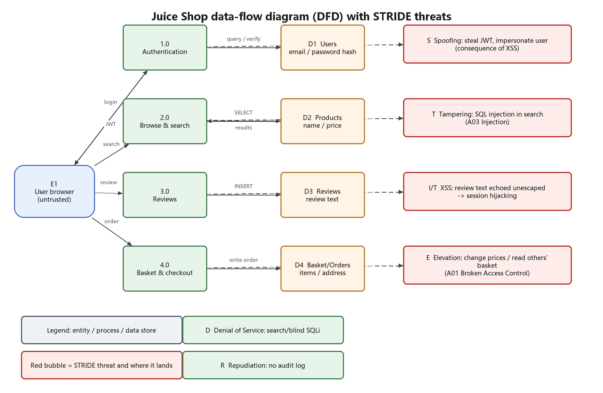

<iframe src="javascript:document.body.innerHTML=..."> into the
search box, the script runs in the origin's context and rewrites the page (captured with headless Edge).| Name | Zhang San |
| Student ID | 12345678 |
| Variant | 1 |
| Audit date | 2026-10-19 |
This audit targets OWASP Juice Shop (v20.3.0, local container). OWASP ZAP was used for automated dynamic scanning (DAST), every alert was then verified by hand, and the application was modelled with a DFD and STRIDE. Finally, remediation is prioritised.
The scan produced 9 alerts, of which 0 high and 2 medium. After manual verification, 3 vulnerabilities are confirmed exploitable, including the SQL injection and cross-site scripting (XSS) required by the manual.
| Item | Detail |
|---|---|
| Target | OWASP Juice Shop 20.3.0 at http://192.168.99.100:3000 (Docker container, NAT to the host) |
| Tools | OWASP ZAP 2.x (zap-baseline.py: spider + passive scan), curl, headless Edge |
| Method | ① scan → ② de-duplicate and rank alerts (Risk/Confidence) → ③ reproduce each manually → ④ STRIDE modelling → ⑤ remediation |
| Boundary | Only the local lab instance was tested; no real commercial site was touched |

| Element | STRIDE | Threat | Realisation path |
|---|---|---|---|
| 1.0 Auth | Spoofing | Attacker impersonates another user | steal a JWT via XSS and replay it; SQLi login bypass |
| 1.0 Auth | Repudiation | A user denies having performed an action | no audit trail linking actions to identities |
| 2.0 Search | Tampering | The search parameter reaches SQL and rewrites it | ' OR 1=1--, UNION SELECT |
| 3.0 Reviews | Information Disclosure | Review text is echoed unescaped and runs in other browsers | stored/DOM XSS → session hijacking |
| 4.0 Checkout | Elevation of Privilege | A normal user acts on someone else's basket or price | /rest/basket/{id}, /api/Users |
| D1 Users | Information Disclosure | Password hashes and emails can be dumped | SQLi + UNION against Users |
| Site-wide | Denial of Service | Heavy or recursive queries exhaust connections | blind SLEEP(), huge page sizes |
Alerts from ZAP, verified by hand; Verified means the issue was actually reproduced on the lab target.
| Risk | Issue | Location | Evidence | Manual check |
|---|---|---|---|---|
| High | SQL injection (login bypass) | POST /rest/user/login | "email":"' OR 1=1--" returns the admin JWT (784 B) | ✔ reproduced |
| High | DOM / reflected XSS (search box) | /#/search?q= | query string written into the DOM unescaped; <iframe src=javascript:alert(1)> executes | ✔ reproduced |
| Medium | Directory browsing / exposed files | /ftp | ZAP found /ftp reachable and listing backup files | ✔ confirmed |
| Medium confidence: High | Content Security Policy (CSP) Header Not Set CWE-693 | http://192.168.99.100:3000param: - | - | — |
| Medium confidence: Medium | Cross-Domain Misconfiguration CWE-264 | http://192.168.99.100:3000param: - | Access-Control-Allow-Origin: * | — |
| Low confidence: Medium | Cross-Origin-Embedder-Policy Header Missing or Invalid CWE-693 | http://192.168.99.100:3000param: Cross-Origin-Embedder-Policy | - | — |
| Low confidence: Medium | Cross-Origin-Opener-Policy Header Missing or Invalid CWE-693 | http://192.168.99.100:3000param: Cross-Origin-Opener-Policy | - | — |
| Low confidence: Low | Dangerous JS Functions CWE-749 | http://192.168.99.100:3000/chunk-Cv2YgWUq.jsparam: - | bypassSecurityTrustHtml( | — |
| Low confidence: Medium | Deprecated Feature Policy Header Set CWE-16 | http://192.168.99.100:3000param: - | Feature-Policy | — |
| Informational confidence: Medium | Modern Web Application CWE--1 | http://192.168.99.100:3000param: - | <script> window.addEventListener("load", function(){ window.cookieconsent.initialise({ "palette": { | — |
| Informational confidence: Medium | Storable and Cacheable Content CWE-524 | http://192.168.99.100:3000/robots.txtparam: - | - | — |
| Informational confidence: Medium | Storable but Non-Cacheable Content CWE-524 | http://192.168.99.100:3000param: - | max-age=0 | — |
# SQL injection: authentication bypass (Juice Shop 20.3.0)
POST /rest/user/login
{"email":"' OR 1=1--","password":"x"}
-> HTTP 200, returns the admin JWT (response length 784 bytes)
# DOM XSS: injected HTML in the search box
GET /#/search?q=<iframe src="javascript:alert(1)">
-> the query string is inserted into the DOM as-is, the script executes
<iframe src="javascript:document.body.innerHTML=..."> into the
search box, the script runs in the origin's context and rewrites the page (captured with headless Edge).| Issue | Fix | Verification |
|---|---|---|
| SQL injection | parameterized queries/ORM binding everywhere; exact match on email at login; disable verbose SQL errors | replaying ' OR 1=1-- returns 401 |
| XSS | output encoding (Angular escapes by default; never call bypassSecurityTrustHtml); CSP script-src 'self'; HttpOnly cookies | injected <iframe> appears as escaped text |
| Broken access control | authorise basket/user resources against the session subject; never trust ids from the URL | user A's token on user B's basket returns 403 |
| Sensitive data exposure | generic error pages; remove debug endpoints such as /rest/admin/application-version | error responses contain no stack traces or SQL |
| Missing security headers | add CSP, X-Content-Type-Options, Referrer-Policy, HSTS | inspect response headers |
Automated scanning quickly covers the common cases (missing headers, information disclosure, injection-style patterns), but the real business impact only appears when alerts are chained: one SQL injection both bypasses authentication and dumps the user table; one DOM XSS escalates to session hijacking and defeats every token-based authorisation check. That is why "scan → verify → model → fix" is one loop, and why the STRIDE table matters: it forces every component to be interrogated instead of only the ones a scanner happened to reach.
zap-report.html (full alerts with requests/responses)screenshots/02-xss-dom.pngdocker run --rm zaproxy/zap-stable zap-baseline.py -t http://192.168.99.100:3000 -r zap-report.html